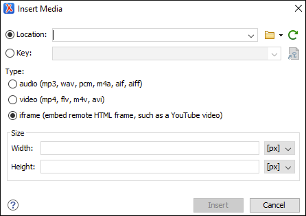

Adding Video, Audio, and Embedded HTML Resources in DITA Topics
You can insert references to media resources (such as videos, audio clips, or embedded HTML
frames) in your DITA topics. The media resources can be played directly in
Author mode and in all HTML5-based outputs. There is a toolbar button
( ) that allows you to insert and configure a
reference to the media resource. You can also drag media files from your system explorer or
the Project view and drop them into
your documents (or copy and paste them).
) that allows you to insert and configure a
reference to the media resource. You can also drag media files from your system explorer or
the Project view and drop them into
your documents (or copy and paste them).
| Media | Description | Type | Supported Size Properties |
|---|---|---|---|
| mp3 | Moving Picture Experts Group Layer-3 Audio | audio | Width |
| wav | Windows Wave | audio | Width |
| pcm | Pulse Code Modulation | audio | Width |
| m4a | Moving Picture Experts Group Layer-4 Audio | audio | Width |
| aif | Audio Interchange Format | audio | Width |
| mp4 | Moving Picture Experts Group Layer-4 Video | video | Width & Height |
| flv | Flash Video | video | Width & Height |
| m4v | Itunes Video File | video | Width & Height |
| avi | Audio Video Interleaved | video | Width & Height |
| embedded video (such as YouTube or Vimeo) | Embedded Iframe Code | iframe | Width & Height |
Adding a Media Resource
To insert a media resource in a DITA document, use the following procedure:
- Place the cursor at the location where you want the media resource.
-
Select theInsert Media Resource action from the toolbar. The Insert
Media dialog box appears.Note: You can also drag media files from your system explorer or the Project view and drop them into your documents (or copy and paste them). Note that this method will bypass the Insert Media dialog box, so if you need to adjust the size you will need to adjust the
@widthor@heightattributes manually.Figure 1. Insert Media Dialog Box  -
Configure the options in this dialog box and click Insert.
The Insert Media dialog box includes the following options:- Location
- Use this option to specify a URL for the media resource as the value of a
@dataattribute inside the<object>element. You can type the URL of the resource you want to insert or use browsing actions in the Browse
drop-down menu (there is also a history drop-down).
Browse
drop-down menu (there is also a history drop-down). - Key
- Use this option to insert the selected key as the value of a
@datakeyrefattribute inside the<object>element. All keys that are presented in the dialog box are gathered from the root map of the current DITA map. You can use the Choose Key Reference button to open
the Choose Key dialog box that presents the list of keys
available in the selected root map.Note: If your defined keys are not listed in this dialog box, it is most likely trying to gather keys from the wrong root map. You can change the root map by using the Change Root Map link in the Choose Key dialog box or change it in the Context option in the toolbar of the DITA Maps Manager.
Choose Key Reference button to open
the Choose Key dialog box that presents the list of keys
available in the selected root map.Note: If your defined keys are not listed in this dialog box, it is most likely trying to gather keys from the wrong root map. You can change the root map by using the Change Root Map link in the Choose Key dialog box or change it in the Context option in the toolbar of the DITA Maps Manager. - Type
- Oxygen XML Editor detects and automatically selects the media type based upon the specified resource in the URL field. You can manually change the type, but keep in mind that in the publishing stage the object element is converted to an HTML5 element based upon the type selected here. You can choose between: audio, video, or iframe.
- Size
- Use this section to configure the Width and
Height of the frame for the media resource. Specifying a
value in these options inserts a
@widthand@heightattribute, respectively. For audio clips, only the Width can be adjusted.
Result in Author Mode: A reference to the specified video, audio, or embedded HTML
frame is inserted in an <object> element and it is rendered in
Author mode so that it can be played directly from there.
- On Ubuntu 17.10, if you receive an error when trying to play videos in
Author mode, you need to install the
libavformat57library.
<object> element is converted to an HTML5 element so that it can be
rendered properly and played in all HTML5-based outputs.- Videos - The
<object>element is converted to an HTML5<video>element. - Audio Clips - The
<object>element is converted to an HTML5<audio>element. - Embedded HTML Frames - The
<object>element is converted to an HTML5<iframe>element.
allowfullscreen parameter will automatically be added (set the value
of this parameter to true to allow videos to play in full screen mode once the
document is converted to XHTML output).Inserting Media in HTML Outputs That Do Not Support Embedded Media
For certain types of HTML output (for example, CHM) that do not support embedded media (such as videos or audio files), Oxygen XML Editor provides a parameter that can be set in the transformation scenario to present the media object as a plain link in the output.
- Edit the DITA transformation scenario for the output type that does not support embedded objects (for example, DITA Map CHM).
- Go to the Parameters tab and click the New button to add a new parameter.
- For the Name, enter: com.oxygenxml.xhtml.linkToMediaResources.
- For the Value, enter: true.
- Click OK and continue on to run the transformation.
Result: The media object will appear in the output as a plain link instead of an embedded object.
For more information, see the following video demonstration: